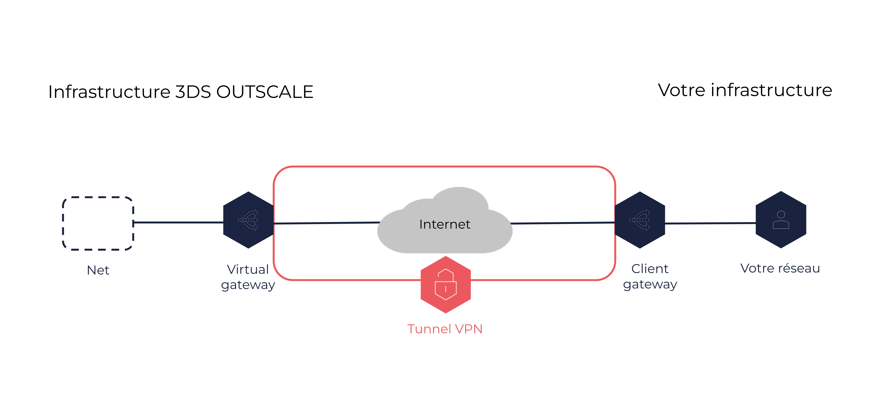

À propos des connexions VPN
Une connexion VPN est une connexion sécurisée entre votre réseau d’entreprise et l’un de vos Nets dans le Cloud OUTSCALE. Les ressources placées de chaque côté de la connexion peuvent communiquer entre elles.
Informations générales
Une connexion VPN se compose des éléments suivants :
-
Une client gateway, de votre côté de la connexion. Cette ressource se situe dans votre réseau d’entreprise, et peut être logicielle ou matérielle. Pour en savoir plus, voir À propos des client gateways.
-
Une virtual gateway, du côté 3DS OUTSCALE de la connexion. Cette ressource est attachée à l’un de vos Nets. Pour en savoir plus, voir À propos des virtual gateways.
-
Un tunnel VPN, qui relie la client gateway et la virtual gateway de manière sécurisée à travers le réseau Internet.

Le protocole de chiffrement du tunnel VPN est l’Internet Protocol security (IPsec).
Une fois la connexion VPN créée, le tunnel VPN devient actif dès que du trafic est généré depuis votre côté de la connexion. C’est donc à partir de votre client gateway que s’établit le tunnel, non de la virtual gateway. Pour en savoir plus, voir la section Cycle de vie ci-dessous.
Pour assurer redondance et haute disponibilité, vous pouvez créer plusieurs connexions VPN entre votre réseau et un même Net.
|
Vous pouvez aussi relier votre réseau d’entreprise à un Net avec DirectLink, une connexion sécurisée physique. Pour en savoir plus, voir À propos de DirectLink. |
|
Une connexion VPN ne fournit pas d’accès à Internet. Pour relier le Net à Internet, vous devez lui ajouter un internet service. Pour en savoir plus, voir Tutoriel : Mettre en place une connexion directe entre des VM d’un Net et Internet. Vous pouvez aussi associer l’internet service à un NAT service. Pour en savoir plus, voir À propos des NAT services. |
Cycle de vie
Une connexion VPN peut être dans l’un des états suivants :
-
Pending : Le processus de création est en cours. La connexion VPN conserve cet état jusqu’à ce que du trafic soit généré depuis la client gateway.
-
Available : La connexion VPN est créée et prête à être utilisée.
-
Deleting : Le processus de suppression est en cours.
-
Deleted : La connexion VPN est supprimée. Pour relier à nouveau votre réseau d’entreprise et le Net, vous devez en créer une nouvelle.
Les ressources supprimées restent visibles pendant 1 heure.
De plus, pour une connexion VPN dans l’état available, le tunnel VPN peut être dans l’un des états suivants :
-
Up : Le tunnel est actif et reçoit le trafic entre la client gateway et la virtual gateway.
-
Down : Le tunnel est inactif, et aucun trafic ne circule entre la client gateway et la virtual gateway. Ceci est dû, par exemple, à une mauvaise configuration de la connexion VPN, ou après une période d’inactivité selon la configuration. Pour en savoir plus, voir Tutoriel : Mettre en place une connexion VPN.
Configuration réseau
Pour autoriser le trafic entre les deux côtés de la connexion VPN, vous devez configurer les ressources suivantes :
-
De votre côté de la connexion, le pare-feu de la client gateway. Vous devez ouvrir les ports adéquats pour autoriser les flux depuis la virtual gateway.
-
Du côté OUTSCALE de la connexion, les security groups associés aux VM dans le Net. Vous devez ajouter les règles autorisant les flux entrants et sortants depuis et vers votre réseau d’entreprise.
Pour en savoir plus, voir Tutoriel : Mettre en place une connexion VPN.
Pages connexes